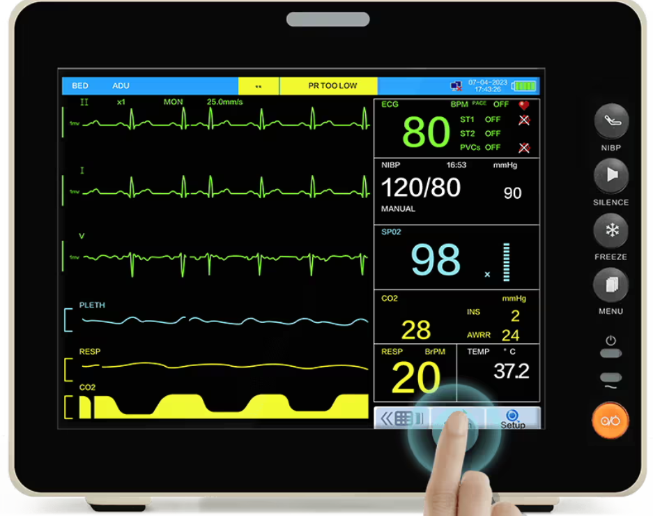
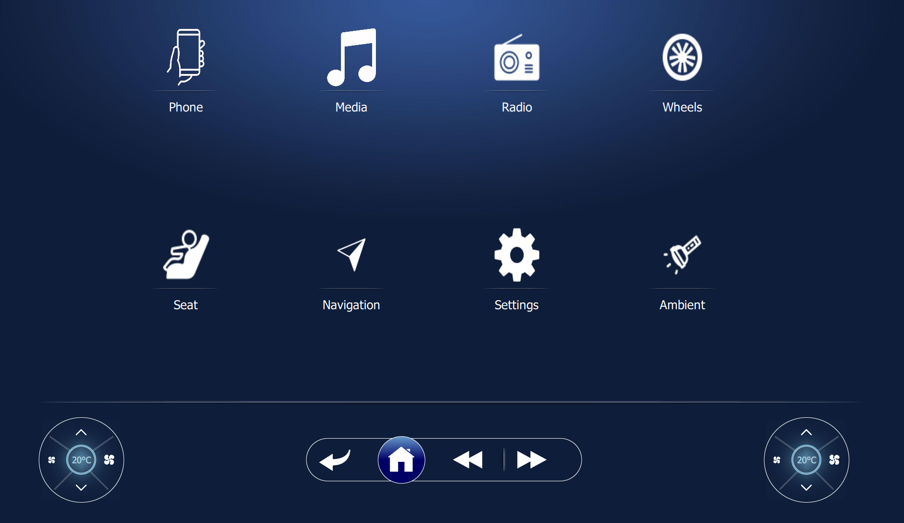
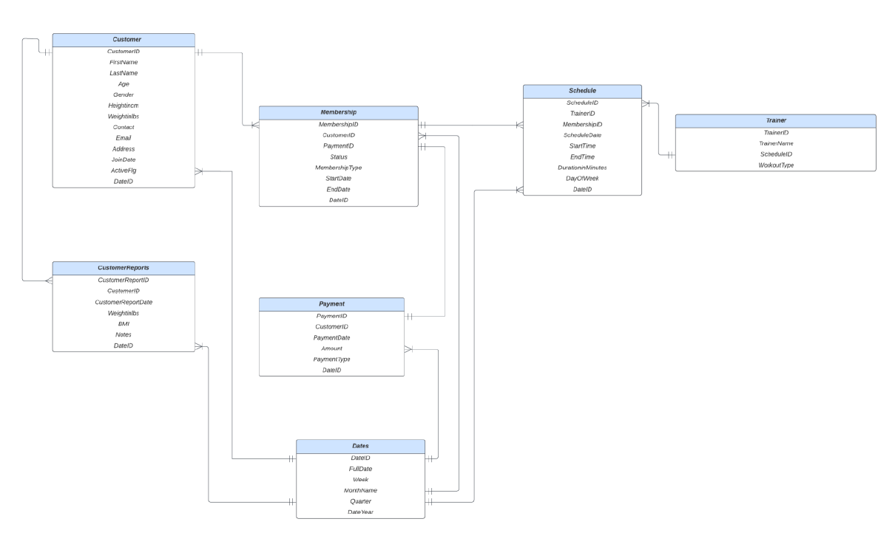
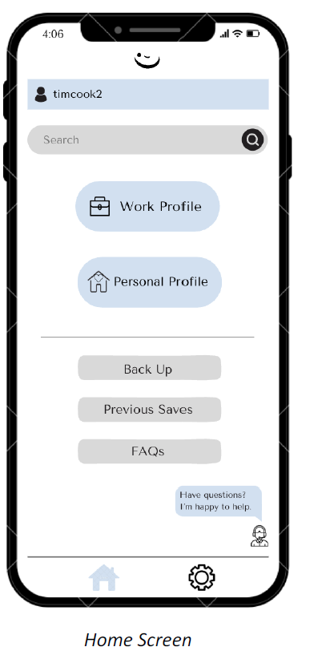
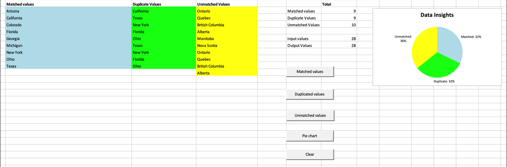
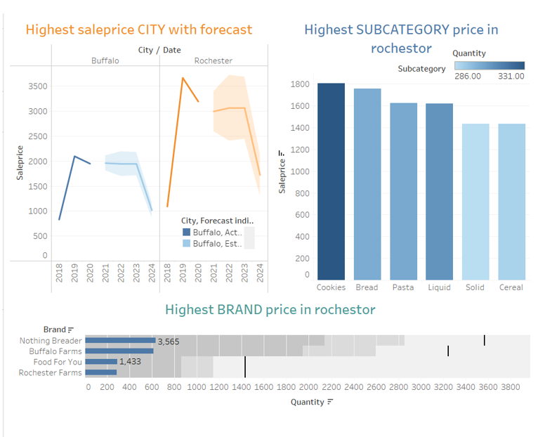
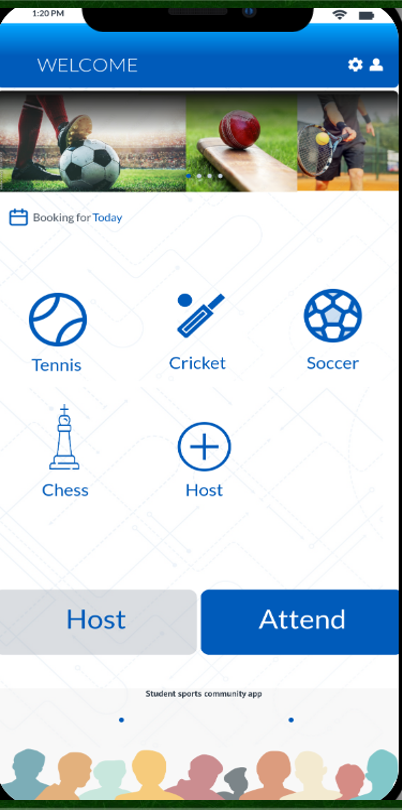

|
Vikram Srinivas Krishnamoorthy
🎓 I am a graduate student with a Master of Science degree in Management Information Systems at SUNY at Buffalo, majoring in Information Systems, with a specialization in Project Management.
🚀 I have 4 years of experience working as a Senior Software Developer in the field of Embedded Device (Health care, Automotive), where I was responsible for building User Interface(UI) for Patient Monitoring Device and Automobile Infotainment. I am skilled in C++, python, Qt, QML.
💼 During my prior experiences, I brought in a creative approach to solve real-life problems. I also made sure I conformed to all the best practices of the organization, during the overall development lifecycle. I am also familiar with Agile practices, where we delivered our projects in sprints. Furthermore, I bring in a tenacious desire to learn new concepts and technologies.
Email /
CV /
Github
|
|
|
Technical Skills
Programming Skills: C, C++, Python,React, Java, Qt, SQL.
Data Skills: MyQSL, OracleSQL, Tableau, PowerBI, PostgreSQL, VBA, AWS, Snowflake, Talend.
Framework Tools: Git, GitHub, Azure Devops, Linux, MacOS, Windows, Qt creator, VS Code, Docker.
UI/UX: Figma, QML, JavaScript, React Js, HTML, CSS.
Other Tools: Word, Excel, Powerpoint, Outlook, Jira.
|
|  |
Patient Monitoring System - Spacelabs Health care LLC
Developed an Alarm Management User Interface for Patient Monitoring by designing reusable custom components and backend classes, enhancing code reusability. Conducted debugging and regression testing, authored unit tests to verify code functionality, and ensured seamless integration with existing functionalities, resulting in a 75% reduction in bugs. Provided mentorship to a team of 5 software developers, guiding them in design documentation, code reviews, deployment, and test case writing to enhance their application and domain knowledge.Pioneered the conceptualization and implementation of waveform plotting using openGL for multiple medical parameters, leading to a 20% improvement in plotting efficiency. Designed an adaptable user interface capable of scaling to various screen sizes, accommodating both embedded hardware and centralized hospital displays. Successfully reduced UI deployment time by 50% for multiple screens. Collaborated cross-functionally with Firmware and Hardware teams to optimize patient data transfer between the database and view.
|
|  |
Car Infotainment System
Built a car infotainment system using the Qt framework. Created the user
interface (UI) using QML and the backend software using Qt and C++. Used the MVVM architecture for the project.
|
|  |
Centralized Gym Management System
Vikram Srinivas, Maneesha, saalim, 2023
The Centralized Gym Management System project is to completely transform the way gyms operate by giving customers a smooth and simple experience while equipping gym owners and staff with powerful management capabilities. It contributes significantly to the expansion and success of the gym business. It addresses the following aspects, all with the goal of establishing a smooth and effective gym operation.
|
|  |
The Bean Authenticator Application
Vikram Srinivas, Vishal Vuppula, Jess Lin, Maneesha, Mansha 2023
The bean device serves as a tangible beacon, aiding internal employees in effortlessly segregating their work and personal profiles. It eliminates the need for physical plugins, ensuring a seamless transition between profiles. When within range of recognized work devices, it automatically connects to the required profile, constantly updating workload status for secure access, emergency backups, and the ability to revert to previous states. Upon leaving the range, the device disconnects, facilitating a clear boundary between professional and personal lives. Operating wirelessly, it utilizes available connectivity options to efficiently manage and switch between profiles without requiring physical connections or extra hardware. Enhancing work/life balance for improved morale and productivity. Ensuring compatibility across devices.
Protecting privacy. Keeping all work-related devices updated with current workloads. Preventing situations where critical data can be easily compromised. Seamless integration into existing workflows and IT infrastructure.
|
|  |
SpreedSheet and Statistical Analysis Data Sets - Identifying Matched, Duplicated, and Unmatched Values
Vikram Srinivas, 2023
In this project, Incorporating VBA code is essential for tasks within a specified dataset, involving the identification and analysis of distinct, replicated, and unmatched data points. This implementation aims to enhance data accuracy and reliability, enabling more profound data analysis and insights. The efficiency of this approach results in reduced processing time, as the automation facilitates streamlined data cleaning and analysis. Consequently, this automated method contributes to more accurate insights and supports well-informed decision-making.
|
|  |
Creating ETL pipeline and Integrating Warehouses with BI Tools
Vikram Srinivas, Lokesh Bollini, 2023
For this project, we utilized the Talend Open Studio ETL Platform and Oracle Cloud to implement a Data Warehousing ETL pipeline, facilitating the loading of data into a data warehouse. To enhance the data warehouse design, we integrated recommended designs and implemented changes through DDL files. Once the data was successfully incorporated into the warehouse, we harnessed it for business intelligence purposes. Our chosen BI-layer tool for this project was Tableau. Following the establishment of a proper connection, we thoroughly examined the available data to identify relevant information suitable for visualization and created tableau storyboard with future forecast.
|
|  |
V Play - Sport Management Application
Vikram Srinivas Krishnamoorthy, 2023
We provide sports companies with an exclusive platform to showcase their kits during events, generating brand exposure through the provision of sports equipment for participants. We developed a specialized sports event management software solution, conceptualizing and engineering the project. Utilizing Figma, we crafted a prototype, and implemented application development in QT/QML. We also utilized Tableau for advanced data visualization.
|
|
Multimedia Team , IC3IoT 2018
Organizer , Zenista 2018
|
|